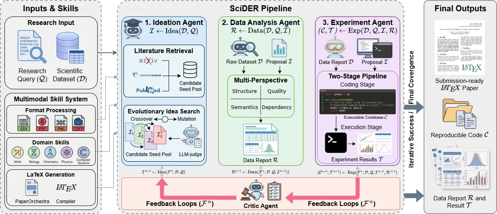
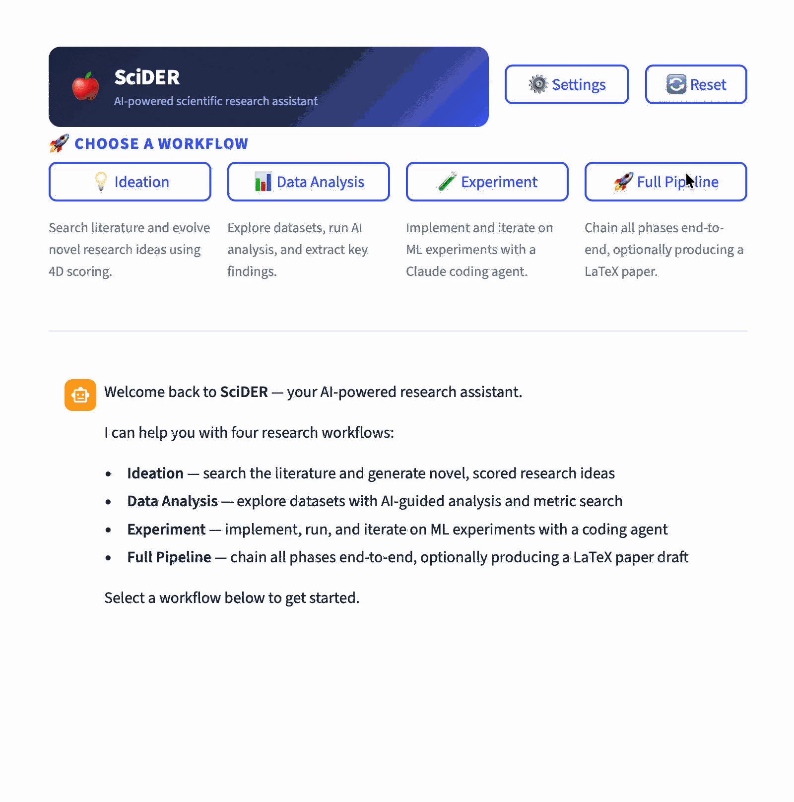
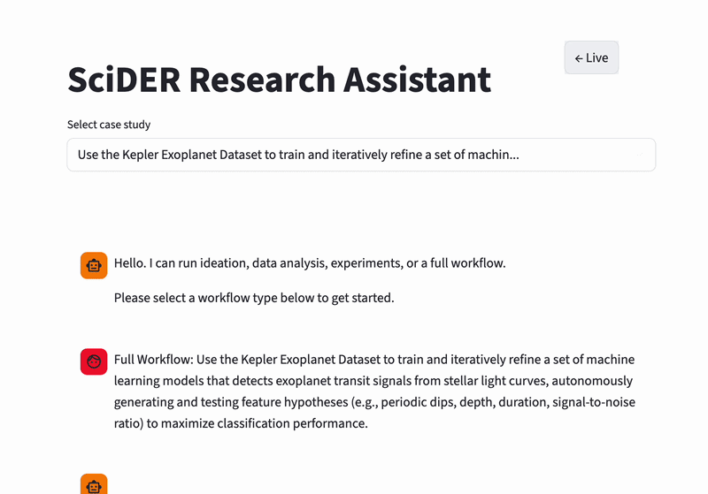

SciDER: Scientific Data-centric End-to-end Researcher
An autonomous, multimodal system that parses raw experimental data, generates hypotheses via Evolutionary Idea Search, and synthesizes executable code across scientific domains.
Authors
Contact
Abstract
While large language models accelerate scientific discovery, existing agents struggle to autonomously process raw, multimodal, and domain-specific experimental data. We introduce SciDER, an autonomous system that automates the research lifecycle. Equipped with a dynamic multimodal skill system, SciDER uses specialized agents to generate hypotheses via Evolutionary Idea Search, analyze raw data, and synthesize executable code grounded in data characteristics. These processes are refined iteratively by a critic-led feedback loop. To support open-source research, we release OpenSciDER-SFT-8K, a curated trajectory dataset, and the OpenSciDER-27B fine-tuned model. Comprehensive evaluations across ideation, multimodal data analysis, and coding benchmarks show that SciDER outperforms state-of-the-art agents, bridging the gap between scientific reasoning and experimental synthesis.
System Highlights
Release Snapshot
Agent Comparison

Demo Walkthrough
- Upload raw experimental data or connect lab storage.
- SciDER parses observations, protocols, and metadata.
- Hypothesis generator proposes next-step experiments.
- Critic validates feasibility and novelty.
Demo Links


Resources
Paper
Our preprint details the multimodal skill system, Evolutionary Idea Search, and critic-led feedback loop, with evaluations across ideation, data analysis, and coding benchmarks, plus the OpenSciDER dataset and model.
arXiv:2603.01421Open Questions
We are actively addressing error cascading in long-horizon multi-agent workflows and closing the performance gap between OpenSciDER-27B and frontier proprietary models. Collaborators are welcome.